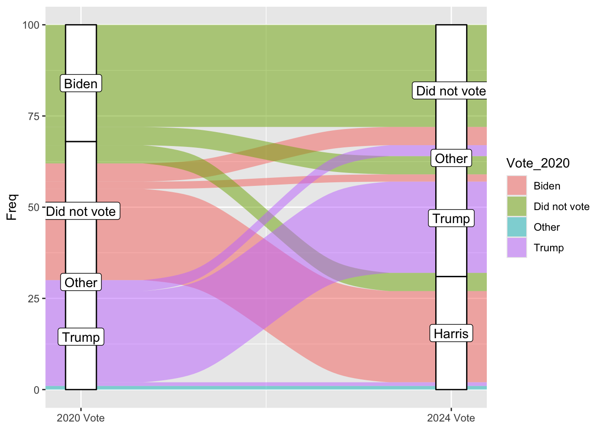
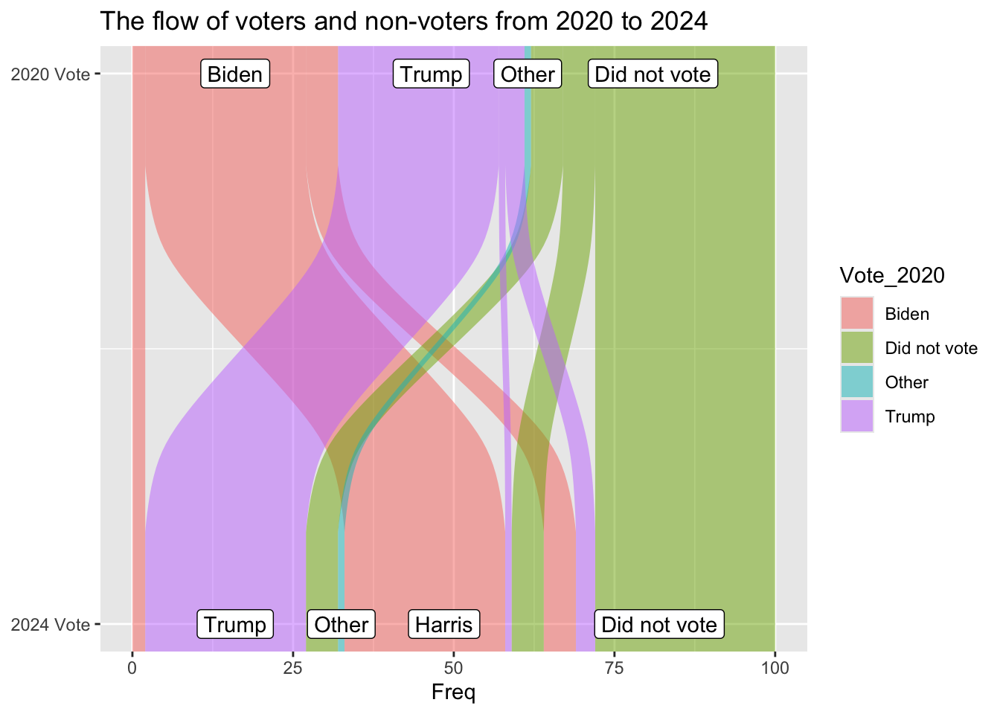
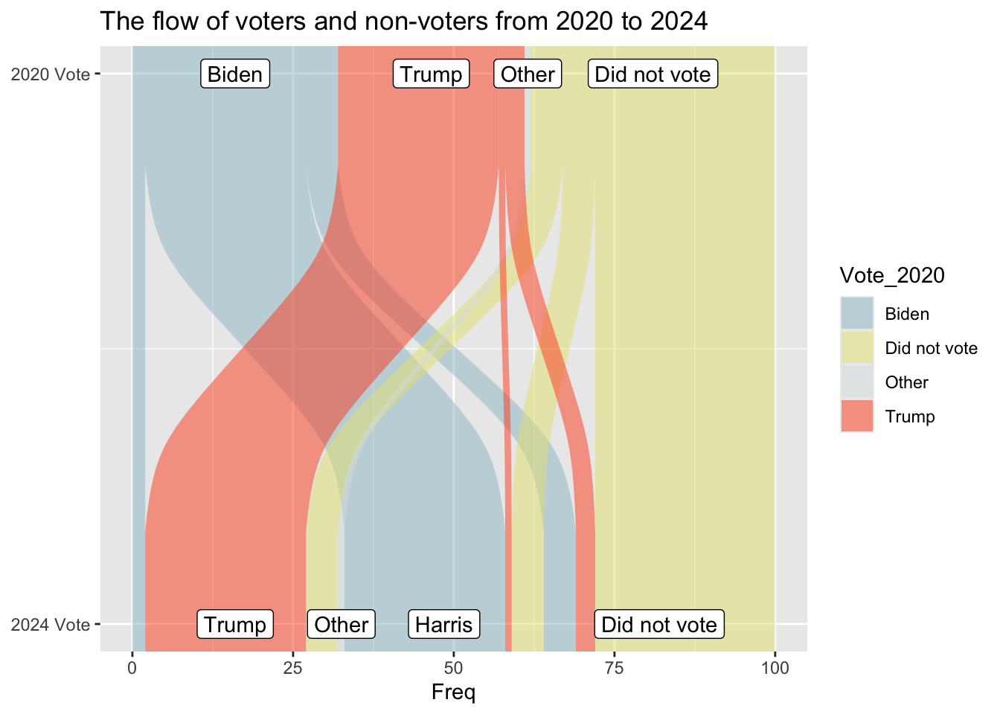
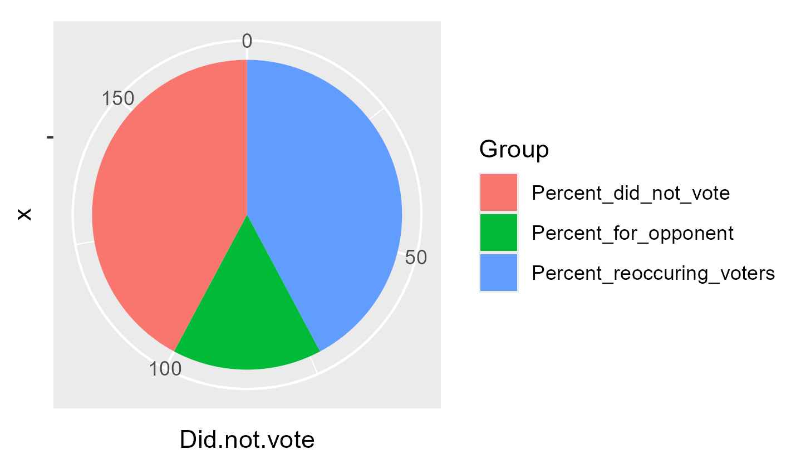

I got my graph from the pew research center https://www.pewresearch.org/short-reads/2025/12/15/our-favorite-data-visualizations-of-2025/sr_25-12-15_data-visualizations_1/ It looks at voters in 2020 and 2024 and determines how many switched their votes. I picked it because my lab has previously used sankey plots to visualize some of our data and I’ve never made one before. There wasn’t a CSV I could download that I saw for this, however the % are labeled on the graph. So I made a spreadsheet including 100 hypothetical voters and used the labeled % to fill it in.
First I need to load packages
library(here)
here() starts at C:/Users/esthe/Documents/GitHub/EstherPalmer-portfolio
library(dplyr)
Attaching package: 'dplyr'
The following objects are masked from 'package:stats':
filter, lag
The following objects are masked from 'package:base':
intersect, setdiff, setequal, union
Warning in to_lodes_form(data = data, axes = axis_ind, discern =
params$discern): Some strata appear at multiple axes.
Warning in to_lodes_form(data = data, axes = axis_ind, discern =
params$discern): Some strata appear at multiple axes.
Warning in to_lodes_form(data = data, axes = axis_ind, discern =
params$discern): Some strata appear at multiple axes.

These axis labels do not match the data
ggplot(vd, aes(y = Freq, axis1 = Vote_2024, axis2 = Vote_2020)) +geom_alluvium(aes(fill = Vote_2020)) +geom_label(stat ="stratum", aes(label =after_stat(stratum))) +scale_x_continuous(breaks =1:2, labels =c("2024 Vote", "2020 Vote")) +coord_flip() +ggtitle("The flow of voters and non-voters from 2020 to 2024")
Warning in to_lodes_form(data = data, axes = axis_ind, discern =
params$discern): Some strata appear at multiple axes.
Warning in to_lodes_form(data = data, axes = axis_ind, discern =
params$discern): Some strata appear at multiple axes.

So by removing the geom_stratum line I can keep the data labels correct, which is fine, just maybe further away from the original graph. I have solved the flipped y axis being weird by flipping the positions of all my variables.
ggplot(vd, aes(y = Freq, axis1 = Vote_2024, axis2 = Vote_2020)) +geom_alluvium(aes(fill = Vote_2020)) +geom_label(stat ="stratum", aes(label =after_stat(stratum))) +scale_x_continuous(breaks =1:2, labels =c("2024 Vote", "2020 Vote")) +scale_fill_manual(values =c("#9AC0CD", "#e7e380ff", "#d9e2e2ff", "#fe4f1eff")) +coord_flip() +ggtitle("The flow of voters and non-voters from 2020 to 2024")
Warning in to_lodes_form(data = data, axes = axis_ind, discern =
params$discern): Some strata appear at multiple axes.
Warning in to_lodes_form(data = data, axes = axis_ind, discern =
params$discern): Some strata appear at multiple axes.

I figured out the colors, it just really hated when I put the variables in there for some reason
rename_columns <-c("Candidate", "2020 Vote", "2024 Vote", "% reoccuring voters", "% did not vote", "% voted for opponent", "Chart")kable(td, col.names = rename_columns, caption ="Percent of voters for each candidate in 2020/2024 and how many voted for the same candidate in 2024", ) %>%column_spec(1, bold =TRUE) %>%kable_styling(latex_options ="striped") %>%kable_styling(fixed_thead =TRUE) %>%column_spec(7, image = charts)
Percent of voters for each candidate in 2020/2024 and how many voted for the same candidate in 2024
Candidate
2020 Vote
2024 Vote
% reoccuring voters
% did not vote
% voted for opponent
Chart
Trump
29
32
85
11
4
NA
Biden/Harris
32
31
79
15
6
NA
Did not vote
38
36
73
73
27
NA

This is a short table but I made it so that the header scrolls with you because I always get annoyed when I have to scroll to the top with things.


{kind=link}